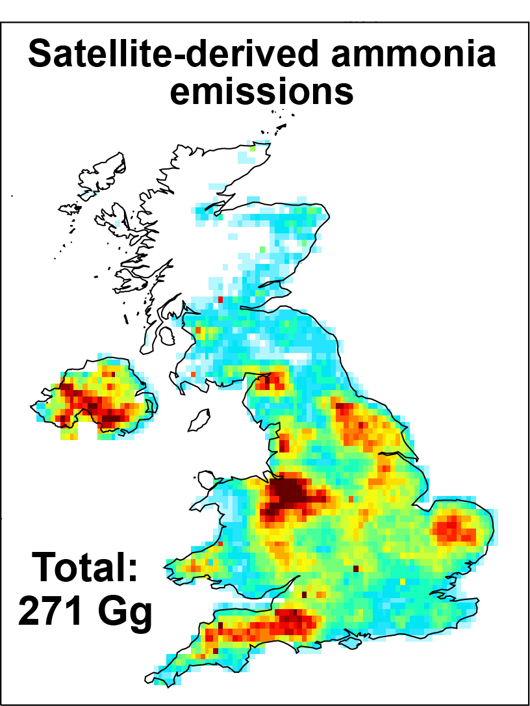
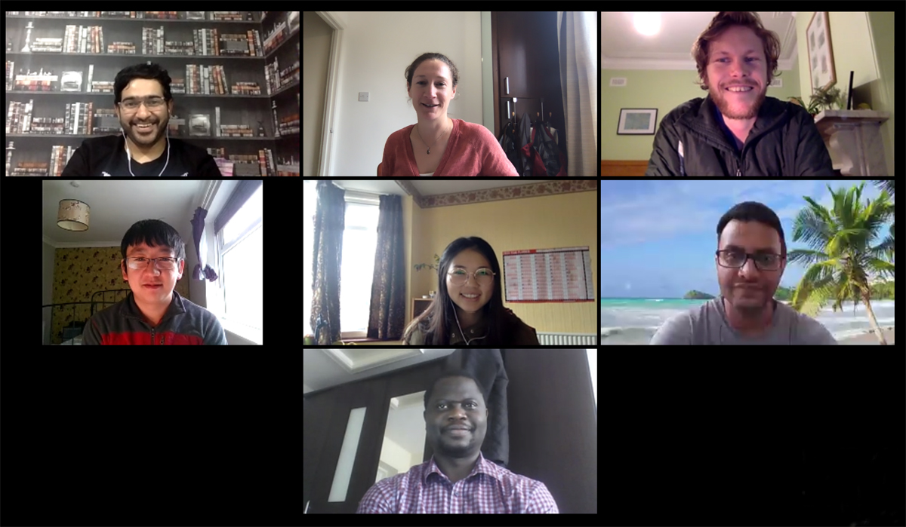

The Conversation piece on the likely health crisis from rapidly developing African cities
The IGC10 contingent at Washington University of St. Louis, USA (Jun 2022).

Our paper on the rise in early deaths from air pollution in fast-growing tropical cities now in Science Advances.

Our paper on greenhouse gas and air pollutant emissions from powerships now in Environ. Sci. Adv.

End-of-year (2021) group celebration at Hollywood Bowl
The Conversation piece on the substantial global public health benefits of net-zero energy

Rebekah (Bex) Horner joins the group to start a PhD on reactive nitrogen in the upper troposphere

Eloise speaks to Channel 4 News on the need to regulate the space tourism industry

Our work showcased at the virtual IGAC Science Meeting (Sep 2021)

Our paper on satellite-derived UK ammonia emissions published in the J. Geophys. Res.
The Conversation and The Guardian articles on the atmospheric impact of a nascent space tourism industry
Press release of our recent paper on monitoring large air pollution changes in cities in India and the UK

Our paper on global observations of upper tropospheric NO2 from TROPOMI published in AMT

Jamie Kelly joins the group to work on PM2.5 sources in the UK cities

Our paper on substantial global mortality from fossil fuel air pollution published in Environ. Res.

Our paper on factors leading to improved air quality in the UK lockdown published in ERL

Our work showcased at the virtual AGU Fall Meeting (Dec 2020)
Rob Ryan joins the group to determine the impact of rocket emissions on atmospheric composition

Our virtual group meeting via Zoom and across 9 time zones
Karn Vohra presents his research at the Virtual EGU Zoom session (May 2020)
Our paper on the impact of the charcoal industry in Africa on air quality and climate published in ES&T

Our paper on trends in city-wide air quality in UK and India in ACP